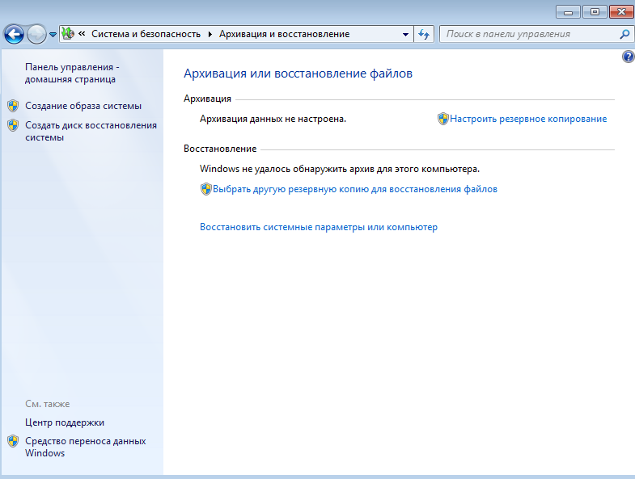
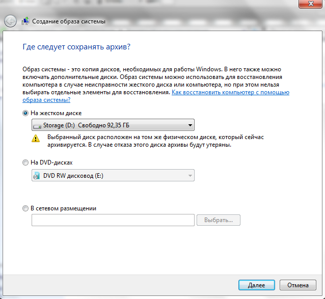
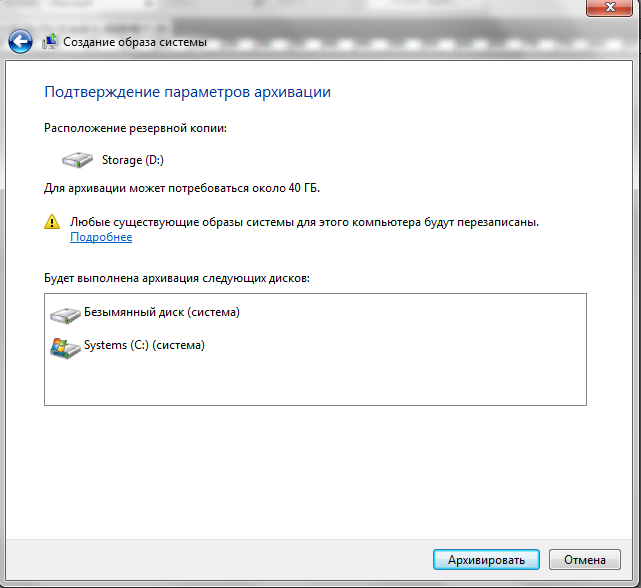
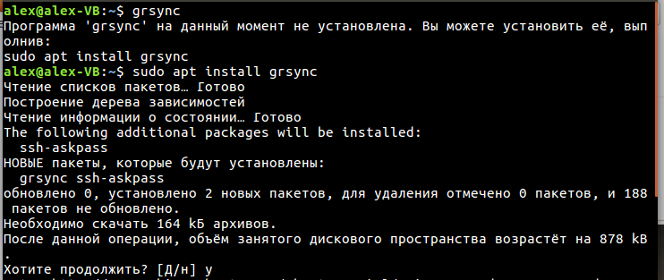
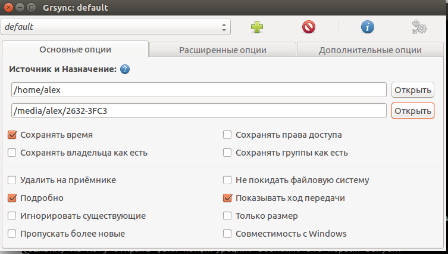
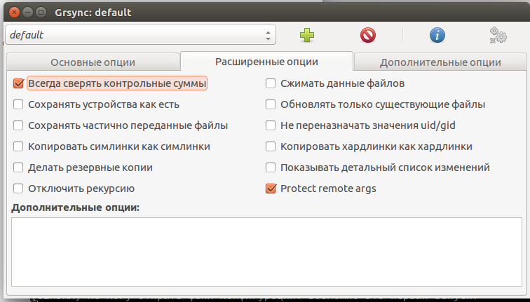
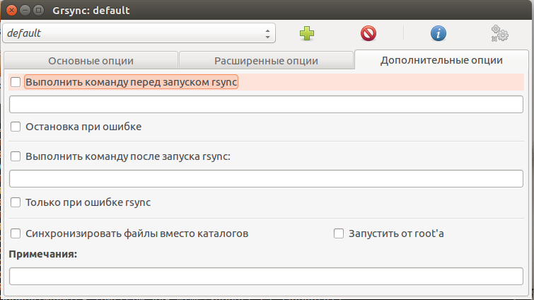
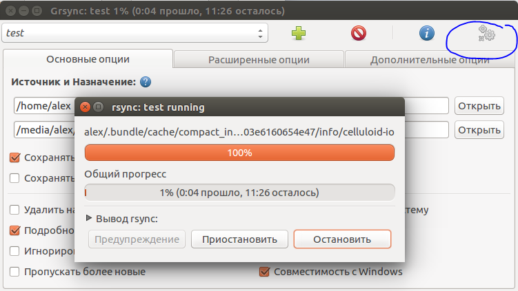
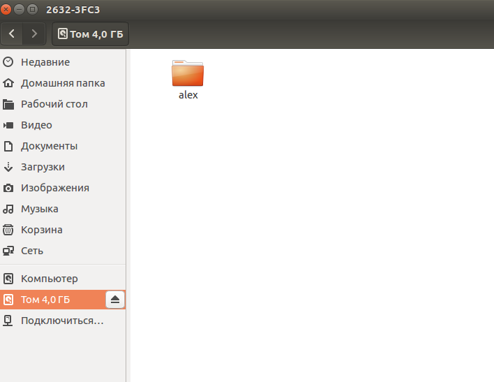
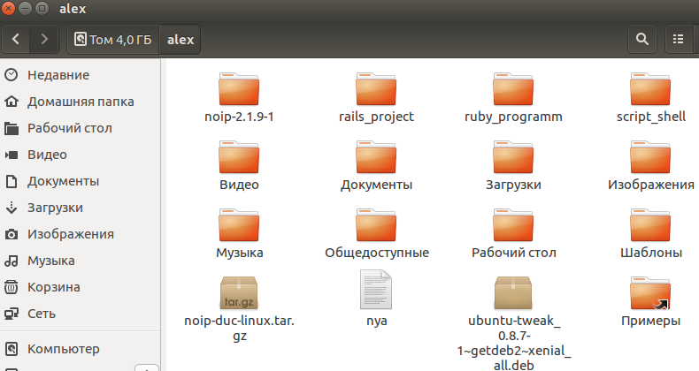

Лабораторная работа №15 - "Резервное копирование unix, Win" -.
Цель работы: Целью работы является получение практических навыков по созданию "бэкапов" системы и данных.
Введение
Резервное копирование (англ. backup copy) — процесс создания копии данных на носителе (жёстком диске, дискете и т. д.), предназначенном для восстановления данных в оригинальном или новом месте их расположения в случае их повреждения или разрушения. (c)Wiki
Резервное копирование необходимо для возможности быстрого и недорогого восстановления информации (документов, программ, настроек и т. д.) в случае утери рабочей копии информации по какой-либо причине.
Требования к системе резервного копирования
- Надёжность хранения информации — обеспечивается применением отказоустойчивого оборудования систем хранения, дублированием информации и заменой утерянной копии другой в случае уничтожения одной из копий (в том числе как часть отказоустойчивости).
- Многоплатформенность - полноценное функционирование системы резервного копирования в гетерогенной сети предполагает, что ее серверная часть будет работать в различных операционных средах и поддерживать клиенты на самых разных аппаратно-программных платформах.
- Простота в эксплуатации — автоматизация (по возможности минимизировать участие человека: как пользователя, так и администратора).
- Быстрое внедрение — простая установка и настройка программ, быстрое обучение пользователей.
Схемы резервного копирования бывают разные вот некоторые из них:
- Полное резервное копирование (Full backup) - Полное копирование обычно затрагивает всю систему и все файлы. Еженедельное, ежемесячное и ежеквартальное резервное копирование подразумевает создание полной копии всех данных. Обычно оно выполняется тогда, когда копирование большого объёма данных не влияет на работу организации. Для предотвращения большого объёма использованных ресурсов используют алгоритмы сжатия, а также сочетание этого вида с другими: дифференциальным или инкрементным. Полное резервное копирование незаменимо в случае, когда нужно подготовить резервную копию для быстрого восстановления системы с нуля.
- Дифференциальное резервное копирование - При дифференциальном («разностном») резервном копировании каждый файл, который был изменен с момента последнего полного резервного копирования, копируется каждый раз заново. Дифференциальное копирование ускоряет процесс восстановления. Все копии файлов делаются в определенные моменты времени, что, например, важно при заражении вирусами.
- Инкрементное резервное копирование (Incremental backup) - При добавочном («инкрементном») резервном копировании происходит копирование только тех файлов, которые были изменены с тех пор, как в последний раз выполнялось полное или добавочное резервное копирование. Последующее инкрементное резервное копирование добавляет только файлы, которые были изменены с момента предыдущего. Инкрементное резервное копирование занимает меньше времени, так как копируется меньшее количество файлов. Однако процесс восстановления данных занимает больше времени, так как должны быть восстановлены данные последнего полного резервного копирования, а также данные всех последующих инкрементных резервных копирований. В отличие от дифференциального копирования, изменившиеся или новые файлы не замещают старые, а добавляются на носитель независимо.
- Клонирование - Клонирование позволяет скопировать целый раздел или носитель (устройство) со всеми файлами и директориями в другой раздел или на другой носитель. Если раздел является загрузочным, то клонированный раздел тоже будет загрузочным.
- Резервное копирование в виде образа - Образ — точная копия всего раздела или носителя (устройства), хранящаяся в одном файле.
В большинстве публикаций по соответствующей тематике рекомендуется полное резервное копирование выполнять один или два раза в неделю, а в остальное время — использовать инкрементальное и дифференциальное. В таких советах есть свой резон. В большинстве случаев полного резервного копирования раз в неделю вполне достаточно. Выполнять его повторно имеет смысл в том случае, если у вас нет возможности на стороне хранилища актуализировать полный бэкап и для обеспечения гарантии корректности резервной копии (это может понадобиться, например, в случаях, если вы по тем или иным причинам не доверяете имеющимся у вас скриптам или софту для резервного копирования
Так же для резервного копирования применяются различные схемы ротации носителей данных(магнитных лент, флешек, жестких дисков и т.д.)
- Одноразовое копирование - Самая простая и используемая схема, не предусматривающая ротации носителей. Все операции проводятся вручную. Перед копированием администратор задает время начала резервного копирования, перечисляет файловые системы или каталоги, которые нужно копировать. Эту информацию можно сохранить в базе данных, чтобы её можно было использовать снова. При одноразовом копировании чаще всего применяется полное копирование.
- Простая ротация - подразумевает, что некий набор лент используется циклически. Например, цикл ротации может составлять неделю, тогда отдельный носитель выделяется для определенного рабочего дня недели. Недостаток данной схемы — она не очень подходит для ведения архива, поскольку количество носителей в архиве быстро увеличивается. Кроме того, инкрементальная/дифференциальная запись проводится на одни и те же носители, что ведет к их значительному износу и, как следствие, увеличивает вероятность отказа.
- «Дед, отец, сын» - Данная схема имеет иерархическую структуру и предполагает использование комплекта из трех наборов носителей. Раз в неделю делается полная копия дисков компьютера («отец»), ежедневно же проводится инкрементальное (или дифференциальное) копирование («сын»). Дополнительно раз в месяц проводится ещё одно полное копирование («дед»). Состав ежедневного и еженедельного набора постоянен. Таким образом, по сравнению с простой ротацией в архиве содержатся только ежемесячные копии плюс последние еженедельные и ежедневные копии. Недостаток данной схемы состоит в том, что в архив попадают только данные, имевшиеся на конец месяца, а также износ носителей.
Хранение резервных копий
Храниться и записываться они могут на разных устройствах или сервисах и разными путями, например:
- USB — запись резервных данных на любое USB-совместимое устройство (такое, как флэш-карта или внешний жёсткий диск).
- FTP — запись резервных данных на FTP-серверы;
- LAN — запись резервных данных на любую машину внутри локальной сети;
- HDD — запись резервных данных на жёсткий диск компьютера;
- DVD или CD — запись резервных данных на компактные диски;
- «Облачный» бэкап — запись резервных данных по «облачной» технологии через онлайн-службы специальных провайдеров;
Выполнение
Начнём с Windows, будем использовать стандартную оснастку "Архивация и восстановление" которая находиться в панели управления.
Данную процедуру желательно проводить на виртуальной машине!!!!
Заходим в панель управления и находим там Архивация и Восстановление, запускаем и видим следующие:

Выбираем в левом углу «Создать образ системы» после чего видим следующие:

Выбираете любой вариант который вам по душе, но мой совет не выбирайте вариант сохранять образ системы на том же диске. Backup должен всегда храниться на другом источники и лучше всего на двух! :)
Если это меню у вас пустое, т.е. нельзя выбрать жёсткий диск, то возможно, что он является у вас активным.
Сделать раздел не активным можно с помощью программы diskpart. Откройте командную строку от имени администратора, выполните команды:
#Внимание! Диск на котором установлена Windows должен быть всегда активным, иначе Windows не загрузится.
#X - это диск на котором находится активный раздел
#Y - это активный раздел.
diskpart
list disk
select disk X
list partition
select partition Y
inactive
После того как выбрали нажимаем далее и видим следующие окно которое нас информирует о том что будет сделано. Нажимаем кнопку «Архивировать» после того как образ создаться, создаем диск восстановления системы

Таким способом довольно простым сделали backup системы и всех установленных программ с их настройками на системном диске. После чего в будущем можно спокойно вставить загрузочный диск который мы создали и восстановить систему. Также вы можете настроить систему архивации, на автоматический режим на свое усмотрение.
Создание резервных копий средствами Unix.
Теперь Unix средств для резервного копирования чуть более чем много, возьмём для примера Grsync. Это программа под названием rsync, только с графическим интерфейсом, из-за этого буква "G" в начале названия.
После установки программы подключите к компьютеру внешний диск или флешку, запустите Grsync и скопируйте ваш домашний каталог в каталог на новом носителе. В первый раз при этом должны быть скопированы все файлы. Впоследствии будут копироваться только измененные или новые файлы. Различные параметры можно оставить заданными по умолчанию. Но о двух параметрах следует поговорить подробнее.
Удалить на приемнике — указывает, должна ли Grsync синхронизировать процессы удаления. В таком случае, если после первого резервного копирования вы удаляете в домашнем каталоге какой-либо файл, то при следующем резервном копировании данный файл будет удален и в резервном каталоге. Если резервную копию требуется защитить от нечаянного удаления, то установить этот флажок нельзя (по умолчанию он также не установлен). Если же вам важно, чтобы содержимое резервной копии точно соответствовало содержимому защищаемого каталога, этот флажок нужно установить.
Не покидать файловую систему — означает, что Grsync будет синхронизировать лишь такие данные, которые находятся в файловой системе исходного каталога. Как правило, этот флажок должен быть установлен.
К основным достоинствам Grsync относятся простота в обращении с программой и то обстоятельство, что ваши файлы переписываются в каталог с резервной копией в соотношении 1:1. Для обращения к вашей резервной копии не требуется никаких специальных инструментов.
Установите её командой, которая приведена ниже.

И потом прямо в консоли напишите Grsync, она запуститься.
Вот такое меню будет перед вами. Сделаем бэкап домашней папки на флешку:
- Подключаем флешку к виртуальной машине.
- И далее в параметре источника указываем нашу домашнюю папку пользователя, а в назначении нашу флешку.

На всякий случай укажем, чтобы сверялись контрольные суммы, вдруг что-нибудь побьется.

Все остальное оставим по умолчанию. Кстати, можно указать, чтобы все запускалось от root’a, чтобы точно все скопировалось, иначе могут появиться ошибки «permission denied»

Дальше нажмём на обведённую кнопку, и пройдёт процесс копирования. Первый раз он займёт довольно большое время, но в следующие разы дело будет идти быстрее т.к. будут копироваться только изменённые файлы.

В общем итоге рано или поздно оно, что то скопирует, бэкап готов.

Все идентично.

Контрольные вопросы
- Что такое резервное копирование?
- Какие бывают виды резервного копирования?
- На какие носители информации можно сделать "бэкап"?
- Для чего создаются резервные копии?
- Какие схемы ротации носителей информации используются?
Ссылки
- Гайд по терминалу в Ubuntu
- Rsync
- Сравнение способов резервного копирования
- Википедия. Резервное копирование.